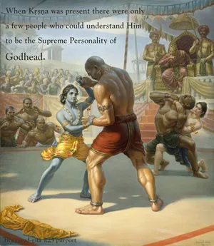
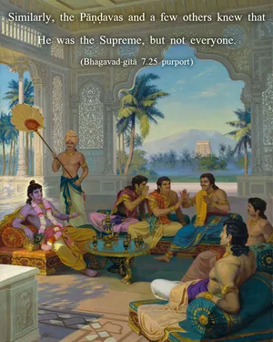
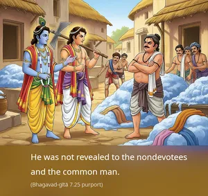
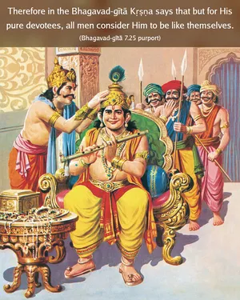

I am never manifest to the foolish and unintelligent. For them I am covered by My internal potency, and therefore they do not know that I am unborn and infallible.




It may be argued that since Kṛṣṇa was visible to everyone when He was present on this earth, how can it be said that He is not manifest to everyone? But actually He was not manifest to everyone. When Kṛṣṇa was present there were only a few people who could understand Him to be the Supreme Personality of Godhead. In the assembly of Kurus, when Śiśupāla spoke against Kṛṣṇa’s being elected president of the assembly, Bhīṣma supported Him and proclaimed Him to be the Supreme God. Similarly, the Pāṇḍavas and a few others knew that He was the Supreme, but not everyone. He was not revealed to the nondevotees and the common man. Therefore in the Bhagavad-gītā Kṛṣṇa says that but for His pure devotees, all men consider Him to be like themselves. He was manifest only to His devotees as the reservoir of all pleasure. But to others, to unintelligent nondevotees, He was covered by His internal potency.
In the prayers of Kuntī in the Śrīmad-Bhāgavatam (1.8.19) it is said that the Lord is covered by the curtain of yoga-māyā and thus ordinary people cannot understand Him. This yoga-māyā curtain is also confirmed in the Īśopaniṣad (Mantra 15), in which the devotee prays:
hiraṇmayena pātreṇa
satyasyāpihitaṁ mukham
tat tvaṁ pūṣann apāvṛṇu
satya-dharmāya dṛṣṭaye
“O my Lord, You are the maintainer of the entire universe, and devotional service to You is the highest religious principle. Therefore, I pray that You will also maintain me. Your transcendental form is covered by the yoga-māyā. The brahma-jyotir is the covering of the internal potency. May You kindly remove this glowing effulgence that impedes my seeing Your sac-cid-ānanda-vigraha, Your eternal form of bliss and knowledge.” The Supreme Personality of Godhead in His transcendental form of bliss and knowledge is covered by the internal potency of the brahma-jyotir, and the less intelligent impersonalists cannot see the Supreme on this account.
Also in the Śrīmad-Bhāgavatam (10.14.7) there is this prayer by Brahmā: “O Supreme Personality of Godhead, O Supersoul, O master of all mystery, who can calculate Your potency and pastimes in this world? You are always expanding Your internal potency, and therefore no one can understand You. Learned scientists and learned scholars can examine the atomic constitution of the material world or even the planets, but still they are unable to calculate Your energy and potency, although You are present before them.” The Supreme Personality of Godhead, Lord Kṛṣṇa, is not only unborn but also avyaya, inexhaustible. His eternal form is bliss and knowledge, and His energies are all inexhaustible.